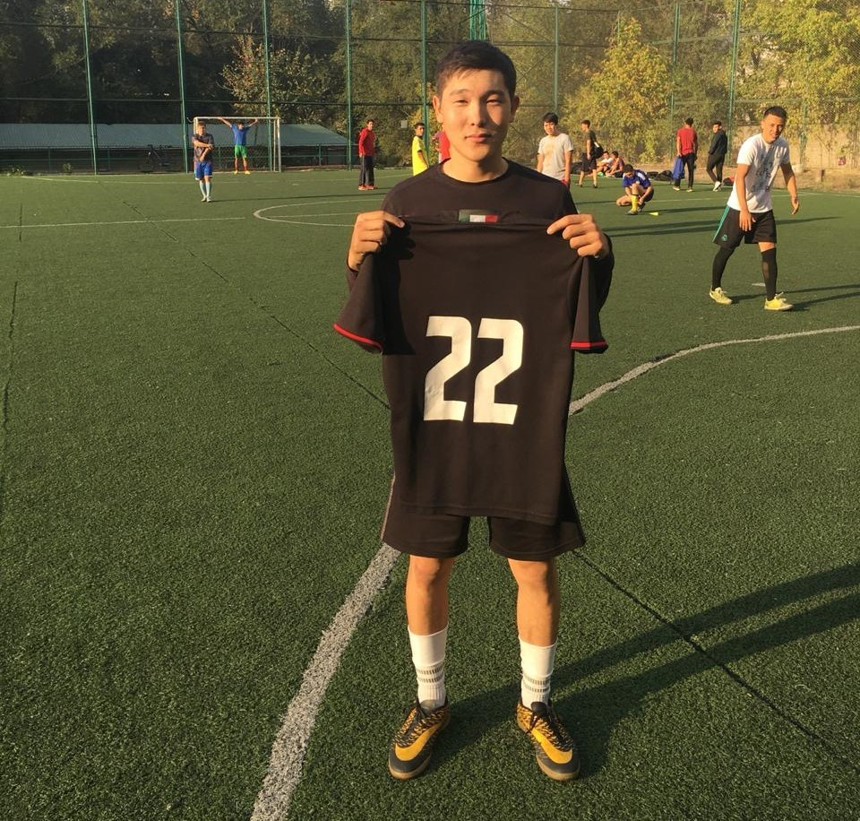
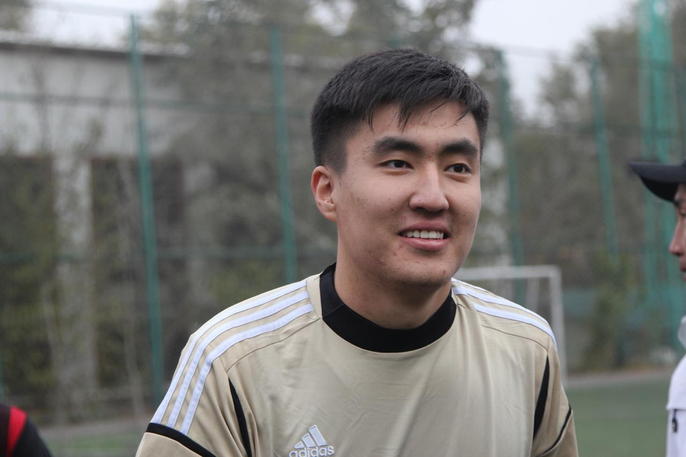
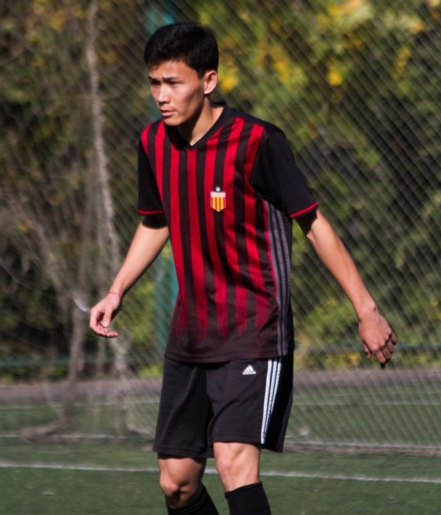
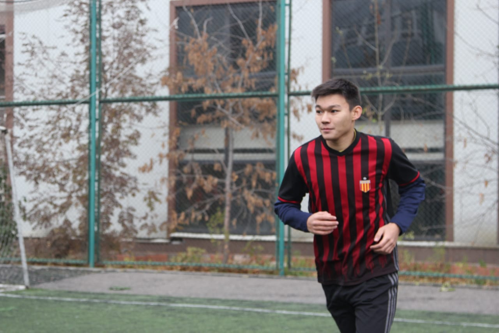
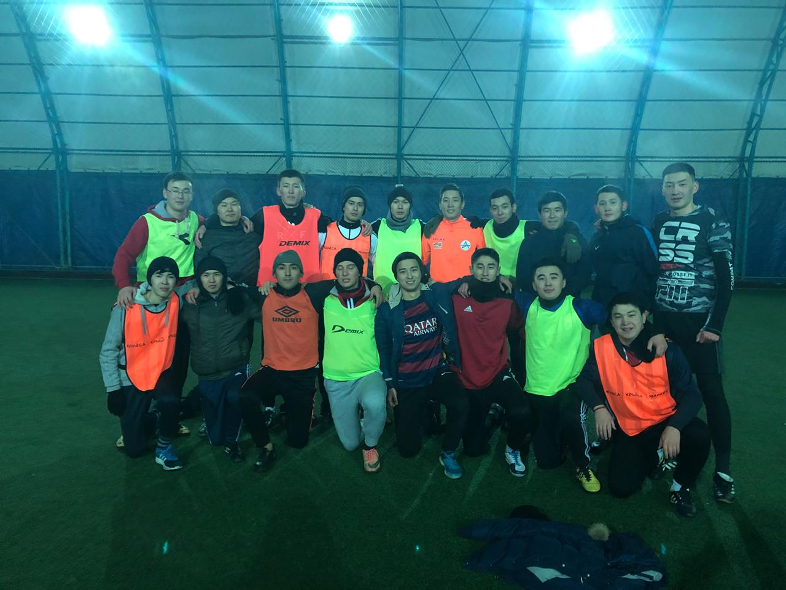

5 "Kuka" Kudaibergen's records that CriRo may never break

#1 Most goals scored in a calendar year (91 goal).
#2 Scoring 60+ goals in all competitions in consecutive seasons.
#3 Most assists in ZHEl Clasiko.
#4 Winning four Golden BOY AUPET in a row.
#5 50 goals in a single league season
BREAKING! Batys agree world record £81.5m fee to sign Union FC goalkeeper Naimanbayev Zhandos!
The 20-year-old Naimanbayev "Jando" Zhandos Kazakh replaces Zhaksylykov Marat, who wanted move to La Liga giants Real Madrid. “It’s a very important decision for me, for my career, and also for my personal life,” Jando said after arriving at AUPET Stadium.
BREAKING!! Yesengeldi with a right calf injury!
In training on Friday the first team player Yesengeldi "YESYA" Samarbayev tore a muscle in his right calf. The defender is expected to be out for about a year.
Urazbayev "Machinka" Abzal signs for FC Batys from Union!
Abzal has completed his world-record transfer to FC Batys from Union for £200m. Union confirmed payment for Abzal's 222m euros buyout clause had been received earlier on Thursday, despite the transfer hitting a stumbling block when AFL refused to accept the release clause.
Return to training!
The second training session of the week came after Kabdygaliyev "Baha" Bagzhan had given the squad two days rest. This Thursday, the first team players, including Danabek, Yernur and Aidynbek, worked out in a morning session on Pitch 2 of the AUPET. Marat and El'dar of Batys B made up the numbers.